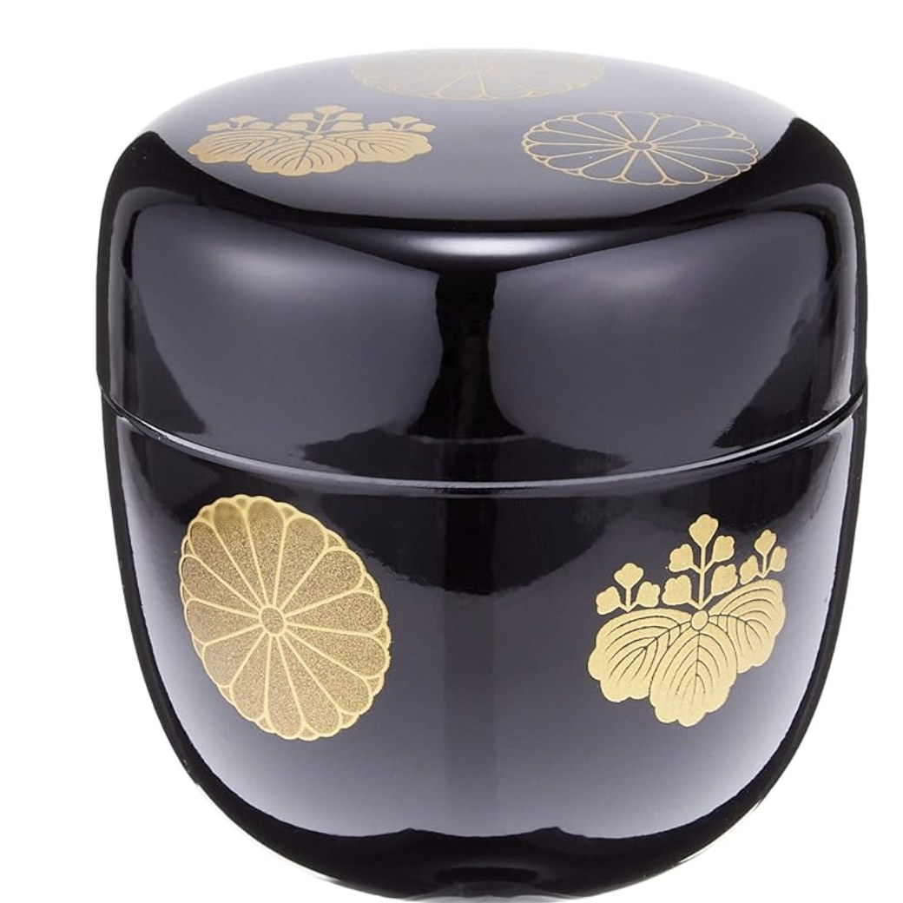
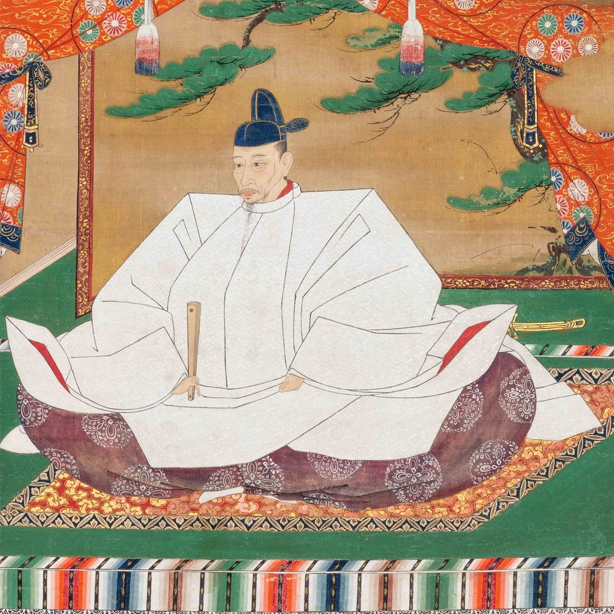
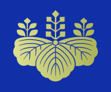

Look closely at the gold marks on a piece like this and you'll find two different crests repeating around it. Neither was decoration for its own sake -- both once belonged to the Japanese Imperial family, and the man who came to use them was born a peasant.
The leaf-and-flower crest is a paulownia crest (kiri-mon, 桐紋) -- originally a private emblem of the Japanese Imperial family. The many-petaled circular crest is a chrysanthemum crest (kiku-mon, 菊紋), the Imperial family's own symbol, going back even further. From the Kamakura period onward, the Emperor would occasionally bestow one of these crests on a warlord as a mark of extraordinary favor for service to the throne -- not something inherited, something earned.

Toyotomi Hideyoshi rose from a peasant family to become the most powerful man in Japan, unifying the country by 1590. In 1586, Emperor Go-Yōzei granted him the prestigious Toyotomi surname -- and, in the same extraordinary gesture, bestowed on him the right to use both the chrysanthemum and paulownia crests. For a man with no noble bloodline, wearing the Emperor's own emblems was as close to legitimizing his rule as heraldry could get.

The go-shichi no kiri paulownia crest -- after passing from the Imperial family to Hideyoshi and his vassals, it was formally adopted as the official seal of the Japanese government after the Meiji Restoration, and the Cabinet of Japan still uses it today. (Crest image: Sakurambo, CC BY-SA 3.0, via Wikimedia Commons.)
In 1606, Hideyoshi's widow, Kita-no-Mandōkoro, built Kōdai-ji Temple in Kyoto in his memory. Its altar and inner shrine were decorated in a bold, painterly gold maki-e style -- using autumn grasses and the same chrysanthemum and paulownia crests Hideyoshi had been granted -- now considered one of the finest surviving examples of Momoyama-period lacquer art. That decorative style became known as Kodaiji maki-e, and it's been reproduced by lacquer artisans ever since.
This small lidded tea caddy (natsume), from Yamanaka-nuri maker Nakatani Brothers Shokai, carries the same two crests in the Kodaiji style. To be upfront about what it is: this is a modern, affordable piece finished in synthetic lacquer over a resin body, not hand-applied urushi on wood -- it won't have the pedigree or the price of an antique or a temple-grade reproduction. What it offers is a real, functional way (as a matcha tea caddy) to keep a 400-year-old piece of Japanese history in daily rotation.
Nakatani Brothers Shokai (中谷兄弟商会) Yamanaka lacquerware natsume (lidded tea caddy), Kodaiji maki-e pattern, black with gold chrysanthemum and paulownia crests. Made in Japan.
See current price on Amazon →As an Amazon Associate, I earn from qualifying purchases.
This page contains an affiliate link — if you buy through it, it costs you nothing extra and helps support this site. The 1598 portrait of Toyotomi Hideyoshi shown above is a museum-held cultural property shown for historical context; it is not the product for sale on this page.